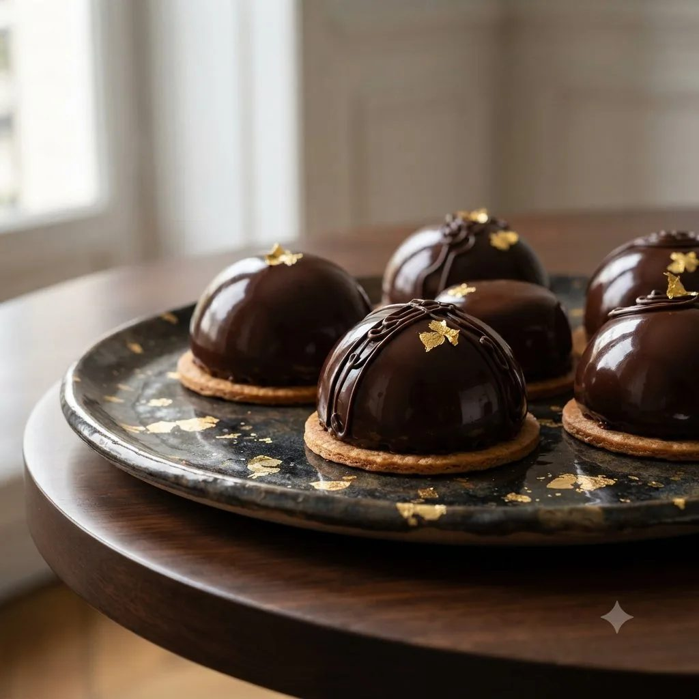

Prestige chocolat
Déclinaison chocolat de la base Prestige : génoise imbibée, ganache au chocolat noir, glaçage chocolat brillant.

Génoise cacao
- Œufs4
- Sucre120 g
- Farine100 g
- Cacao en poudre20 g
Ganache
- Chocolat noir200 g
- Crème liquide200 ml
Finition
- Glaçage chocolat150 g
- Copeaux de chocolatpour décorer
Étapes
- Réaliser la génoise en ajoutant le cacao tamisé à la farine, cuire 15 minutes à 180°C.
- Porter la crème à ébullition, la verser sur le chocolat haché, mélanger jusqu'à obtenir une ganache lisse.
- Laisser tiédir la ganache jusqu'à une texture tartinable.
- Découper la génoise en carrés, garnir généreusement de ganache.
- Napper de glaçage chocolat, décorer de copeaux avant prise complète.
- Réserver au frais 30 minutes avant de démouler et servir.
Vous produisez en volume ?
4Cake fournit les professionnels de la pâtisserie au Maroc : chocolat, fruits secs, décors et matériel, avec tarifs et conditionnements grossiste.
Voir les tarifs grossiste